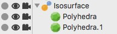

アイソサーフェス
アイソサーフェスは球体やスプライン、メッシュの頂点やパーティクル同士を、それらが液体であるかのように接合するために使う事のできるオブジェクトです。これはメタボールとしてもよく知られています。

使い方
アイソサーフェスを使うには、いくつかの球体やポリゴンオブジェクト、スプラインやパーティクルオブジェクトを、子オブジェクトになるようにアイソサーフェスにドラッグ・ドロップする必要があるだけです。アイソサーフェスオブジェクトは、子オブジェクトの情報を集めて、それらの等値面を計算します。メタボールのサイズを調整するには、メタボール タグをその全て小オブジェクトに適用してサイズを調整する事ができます。
上のオブジェクトは、このちょっとした設定で作成されました。

プロパティ
- 等平面値: 等値面の計算に使用されるスカラー値
- 解像度: バウンディングボックスの１辺の最大分割数。この解像度プロパティを増加させると、急激に等値面のポリゴン数は増加しますので、この値を上げる事には注意して下さい。経験的には、２倍の解像度で、ポリゴン数は8倍になります。